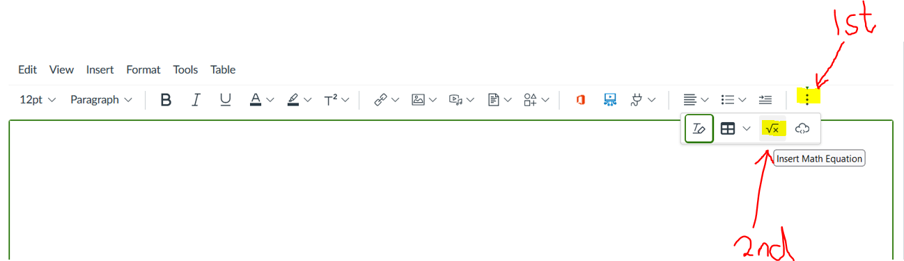

Discussion Board (DB) Forum Requirements
Great Students,
Greetings to everyone.
To ensure a safe learning environment for everyone and a high academic standard for teaching and learning, I
ask everyone to please follow these requirements.
(1.) Please review the Rules of Netiquette.
(2.) Each post should be unique and substantive. Please be creative.
(a.) The post should be on-topic as asked in the Discussion assessment.
(b.) There are several concepts/topics discussed each week as listed in the Pacing Guides.
When applicable, post on a different concept/topic that has not been posted by someone else, provided it is
a topic/concept listed for that week.
(c.) Review all previous posts from your colleagues and my comments to their posts/responses as applicable,
before you submit your own post.
(d.) Unless stated otherwise, all DB posts besides DB 1 are applied problems. We want our students to see
the meaning of what they are learning. We want them to relate their learning to real-world applications.
In that regard, please post an application of the topic/concept.
Review your textbook (eText), solve an applied problem, check the solution at the back of the textbook or in the Solution Manual to ensure you got it correct.
Then, submit your post by writing the applied problem completely, solving it by showing all work, and
interpreting your solution (Write – Solve – Interpret).
Please see the DB Samples for examples of substantive posts.
(e.) As specified in the DB Samples, please write:
(i.) Topic
(ii.) Concept (The concept is a part of the topic.)
(iii.) Applied Problem (Please note that all word problems are not applied problems. To help you in this regard, the applied problems shall be provided for you.)
(iv.) Solution
(v.) Interpretation/Conclusion/Decision (whichever is applicable)
(vi.) Reference
(3.) (a.) The initial post is typically due on Thursday each week by 11:59 pm EDT.
(b.) Please make only one initial post. In other words, only one thread per student is allowed.
(c.) Multiple posts/threads are not allowed and will not be graded.
(d.) Re-posts are allowed and may be needed based on my comments to your initial post.
(e.) If you need to do a re-post, please post it as a response to my comments or as a response to your first
post as applicable. But, please do not create a new thread.
(f.) I am not required to comment on every post. However, if I make any comment to your post, please make
sure you address that comment as applicable.
(g.) If you do not understand my comments, please contact me via email and/or attend the Live
Sessions/Student Engagement Hours. Typically, I do not go back-and-forth with a student
(responding more than one time to a student) in DB forums. Hence, it is highly recommended you contact me
via email if you have any question regarding my comments.
(h.) If any of your colleagues or I make any comment to your initial post, please do not edit/modify that post after
we write the comments. Rather, respond to the comments as applicable.
(4.) (a.) The initial response (response to an initial post) is typically due on Saturday each week by 11:59 pm EDT.
(b.) In your response, please mention the first name of your colleague.
(c.) At least one response (one or more responses) to an initial post of your colleagues is required.
(d.) Please write a substantive response.
A substantive response is the response that provides constructive criticism, alternative approach that gives
the same correct output, additional helpful information that will improve the post,
and the correction of any incorrect step and/or output among others.
How would you improve the initial post?
Did you find any errors in the initial post? If you do, please correct the error. Teach your colleague about
the error, and explain to him/her how to fix it.
What new knowledge can your colleague acquire from you based on your response?
Can you solve the initial post using an alternative approach that will give the same correct output?
What real-world examples/applications can you provide based on the initial post? Discuss/Explain. Do not
just state/mention. Cite your sources accordingly.
Did your colleague learn anything meaningful from you based on your response to the initial post?
Please focus on the initial post. Do not deviate from the concept/topic in the initial post. Do not bring up
your own unrelated topic/concept.
Teach/Show your colleague something new and meaningful based on the initial post.
Please see the DB Samples for examples of substantive responses.
(5.) (a.) Any attachment should be inserted directly (not attached). Any attachment whose content is not
entirely seen directly in the Canvas editor will not be graded.
This implies that no one should click your attachment to see it. Insert it directly so everyone can clearly
see it. Please see (b.) below.
(b.) For all Math work (symbols, formulas, equations, fractions, radicals and exponents among others);
please use the Insert Math Equation icon.


(c.) Alternatively, if your handwriting is legible; you can write your post/response on paper, take clear pictures of the entire work and insert directly in the Canvas editor.
Do not attach as a file. Insert directly in the editor as a picture.
Use the Snipping Tool or the Snip & Sketch on your computer to take clear screenshots and trim off excess space/irrelevant information, then insert the screenshots directly in the Canvas editor.
(6.) (a.) For DB 2 through DB 9 assessment, written and/or video submissions are acceptable.
For DB 1 and DB 10 assessment, written submission is required.
(b.) Written Submission:
Use an acceptable font and a font size of 14pt in all your writings.
Using the Times New Roman font and a font size of 14pt is recommended.
(c.) Video Submission:
(I.) Closed-captionining of your video is required.
(II.) Please insert the video directly in the Canvas editor. Do not post an attachment.
(d.) Written and/or Video Submissions:
(I.) Make sure your post and response are well-formatted (visually appealing), nice background/lighting, etc.
(II.) Use only ordered lists. Enclose numbers/numerals/alphabets in the ordered lists in parenthesis. Alternatively, you may make them bold. This is necessary to show that they are ordered lists.
(III.) Avoid unordered lists. In other words, avoid bullets.
(IV.) Use appropriate spacing in your work.
(V.) Insert any diagrams/visuals directly in the Canvas editor. Label them accordingly. If they are not to scale, please write a note in that regard as applicable.
(VI.) If you need to include any link in your post or response, please paste the direct address of that link.
(7.) Please proof-read your writings for mechanical accuracy errors.
Any use of "i" attracts deduction of points.
Multiple mechanical accuracy errors will lead to deduction of points.
I understand that this is not an English class. However, you are expected to write well.
(8.) Sources must be cited accordingly.
You may use the APA (American Psychological Association) style, MLA (Modern Language Association) style, or the Chicago Manual of Style.
(9.) Please review the Sample Discussion Post and Response.
Should you have any questions, please let me know.
Thank you.
Samuel Chukwuemeka
Working together for success